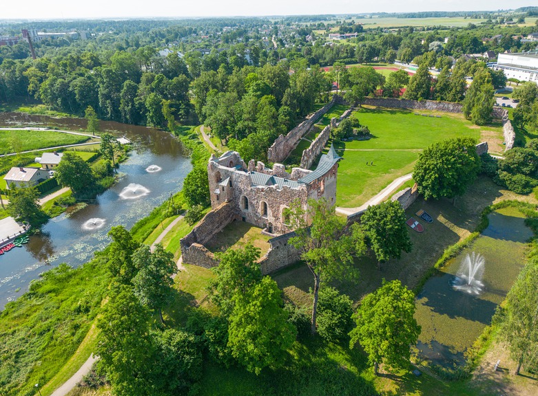
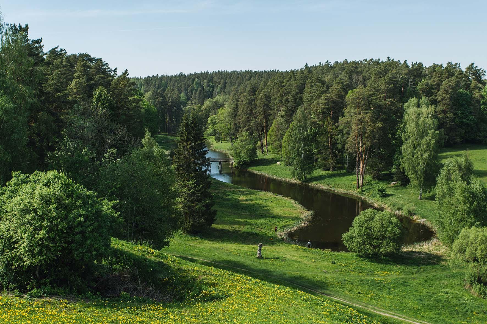

Dobele
Dobele ir mājīga pilsētiņa pašā Latvijas sirdī, kas pazīstama ar saviem spilgtajiem svētkiem un bagātīgo vēsturisko mantojumu. Tās ielas rotā gleznaini namiņi, un apkārtne vilina ar zaļajiem ainavām un parkiem.
Populāras vietas!

Dobeles pils

Dobeles ainavu parks